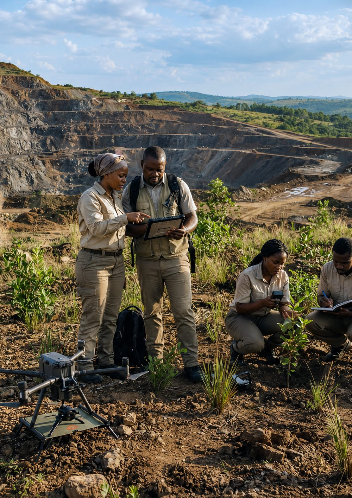

Intelligence environnementale
Réhabilitez les mines avec la précision des données
GREENMINE réunit diagnostic de terrain, cartographie et suivi pour transformer d'anciens sites miniers en terres à nouveau utiles. [CONTENU À CONFIRMER : sous-titre exact du prototype]
Découvrir la solutionExplorer la démo →Des terres fragilisées. Des décisions sans visibilité.
La réhabilitation classique dépend de missions épisodiques et d'informations fragmentées. GREENMINE vient d'abord rendre mesurable et actionnable.
Sols contaminés
Des résidus miniers dégradent durablement la qualité et la fertilité des terres.
Érosion importante
Les sols mis à nu accentuent le ruissellement, les fissures et les risques d'inondation.
Suivi coûteux
Les missions terrain répétées mobilisent des équipes et ralentissent les décisions.
Données dispersées
Photos, analyses chimiques, relevés et topographie restent difficiles à croiser.

La solution
Le cerveau numérique de la réhabilitation.
Une seule plateforme rassemble les données du site (images, analyses de laboratoire), évalue les risques puis traduit l'analyse en un plan de restauration concret.
- CentraliserToutes les données de chaque site en un seul espace.
- ComprendreDiagnostic, classes A–E et priorités par micro-zone.
- RestaurerItinéraire technique, espèces et chiffrage zone par zone.
La plateforme
Du terrain au rapport, sans rupture.
Six modules connectés pour observer, décider et suivre. [CONTENU À CONFIRMER]
Tableau de bord
Pilotez les sites, hectares restaurés, zones à risque et indicateurs depuis un même espace.
Voir la démo →Cartographie interactive
Superposez sols, contamination, pente, végétation et zones restaurées.
Voir la démo →Module IA
Détectez la dégradation, estimez l'érosion et recevez des recommandations végétales adaptées. Aujourd'hui : moteur de règles explicites.
Voir la démo →Module Drone
Importez les images du sol, comparez les campagnes et mesurez l'évolution du terrain. Import de fichiers disponible ; traitement drone [À CONFIRMER].
Voir la démo →Application mobile
Collectez photos géolocalisées, analyses de sol et signalements directement sur le terrain.
À venir : [CONTENU À CONFIRMER]Rapports automatiques
Générez des livrables conformes avec graphiques, cartes et indicateurs de suivi.
Voir la démo →Comment ça marche
Une boucle de restauration continue.
Créer
Créez un projet : site, localisation, type d'exploitation.
Collecter
Images (téléphone, drone, satellite), analyses de laboratoire, localisation.
Analyser
Score, classe A–E et priorité par micro-zone.
Recommander
Itinéraire technique, espèces, quantités et budget.
Suivre
Campagnes M3, M6, M12 comparées à l'état initial.
Démo interactive
Testez le parcours d'analyse.
Simulation indicative sur trois indicateurs. Pour le parcours complet, ouvrez l'espace de travail.
Impact
Mesurer ce qui change vraiment.
GREENMINE transforme la réhabilitation en trajectoire mesurable. Chiffres = objectifs du prototype, à valider, non mesurés
coûts de suivi
taux de réussite
suivi accéléré
traçabilité des actions
Pour qui ?
Une lecture commune du terrain
Modèle économique
Une offre adaptée à chaque étape.
La création initiale ou le suivi continu, GREENMINE s'adapte. [CONTENU À CONFIRMER : tarifs]
Composer votre offre- Abonnement SaaS
- Diagnostic de site
- Suivi par drone
- Tableau de bord client
- Plantations et suivi
- Accompagnement technique
Notre vision
Développer une approche intelligente et durable de réhabilitation des anciens sites miniers afin de les transformer en espaces agricoles et forestiers productifs, tout en restaurant leurs fonctions écologiques.
Contact
Passez du constat au plan d'action.
Présentez-nous votre terrain, nous vous montrons comment GREENMINE le transforme en plan de restauration.